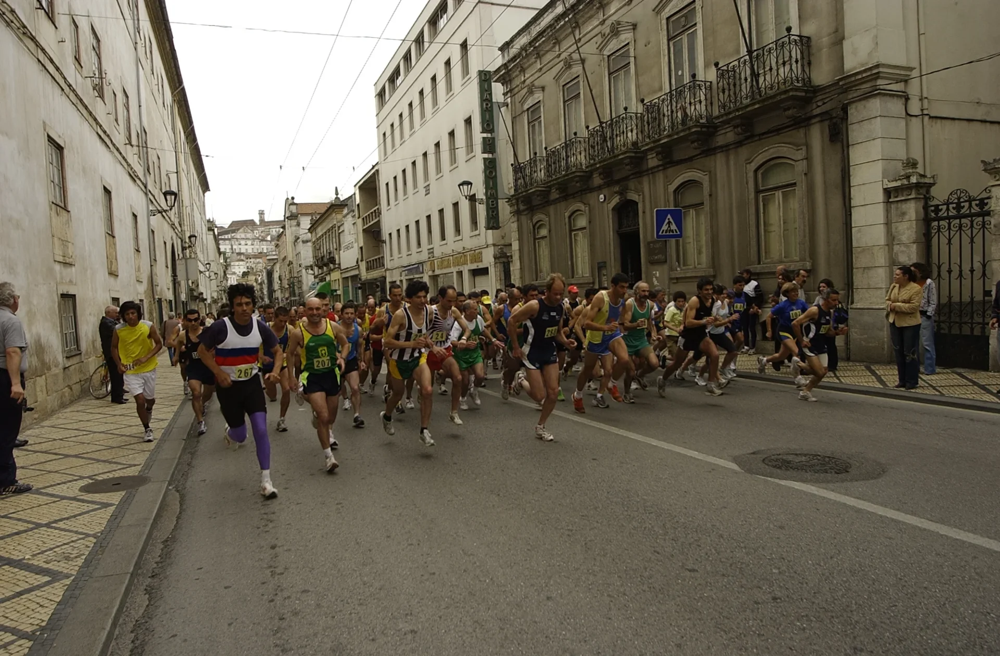

Inscrições via Lap2Go. Só confirmadas após pagamento. Sem reembolsos.
A emissão de fatura deve ser solicitada no ato de inscrição. A cedência de dorsais a terceiros não é autorizada.
Limite horário das provas: 1 hora e 30 minutos. Após passagem do último carro, participantes no percurso ficam sob responsabilidade própria.
5 km pelo centro histórico da cidade, com ponto de abastecimento líquido no percurso e na meta.
Rua da Sofia → Av. Sá da Bandeira → R. Padre António Vieira → Couraça dos Apóstolos → R. de S. João → Rua Larga → Praça Dom Dinis → Calçada Martim de Freitas → Alameda Dr. Júlio Henriques → Ladeira das Alpenduradas → Rua do Brasil → Av. Emídio Navarro → Largo da Portagem → R. Ferreira Borges → R. Visconde da Luz → Praça 8 de Maio